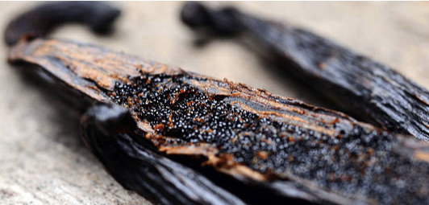
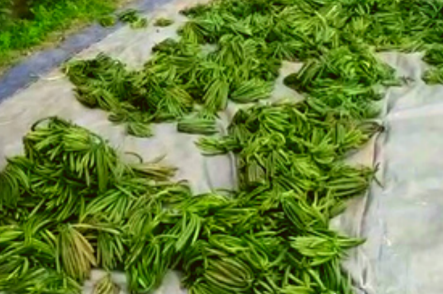
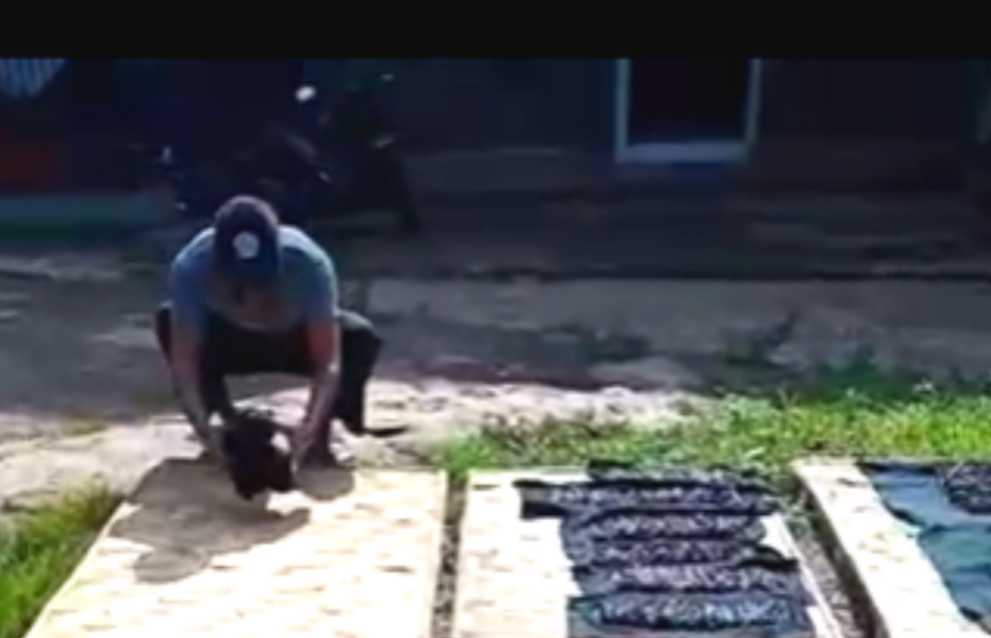
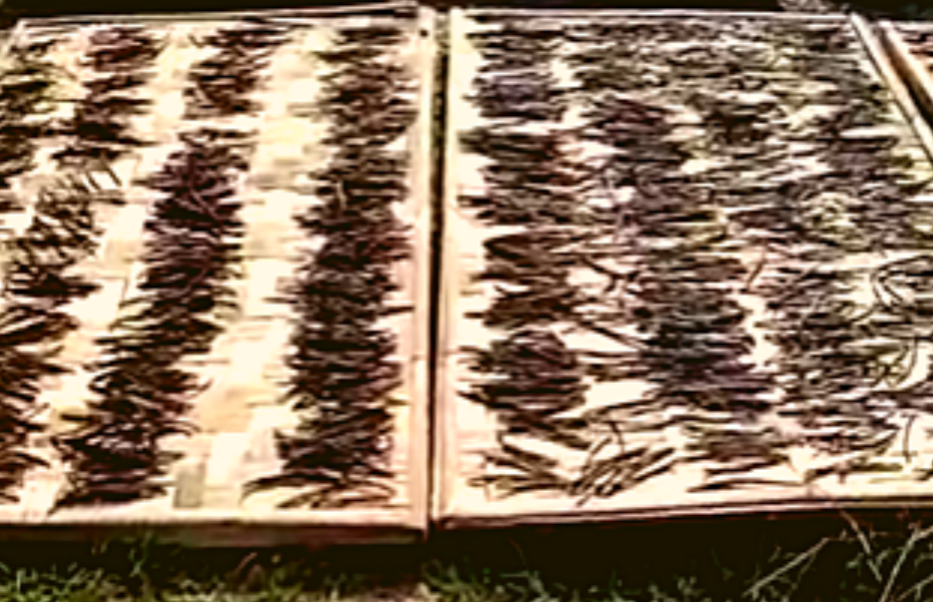
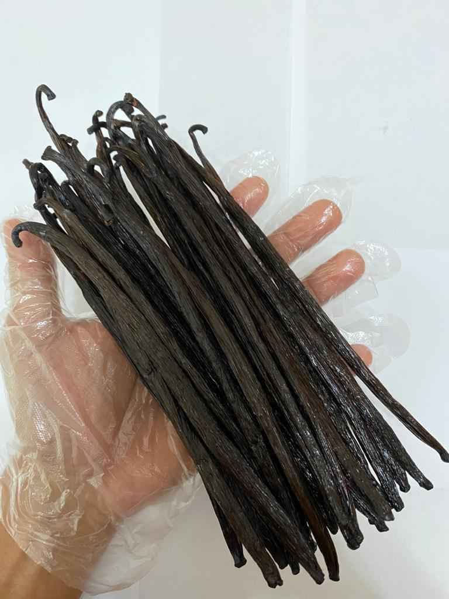

私たちのバニラ
最高級のバニラビーンズをお客様へ提供すること、インドネシアの農業に従事する方々の暮らしを良くすることをミッションとしてインドネシア産のバニラビーンズの販売を行っております。 バニラは、輸出先国の規制に従い、検疫証明書を添付して、製品が安全で健康であることを確認して販売をしています。 最高級品質のTahitian、Planifolia、Gourmetの3種類のバニラをインドネシア商業省とのプロジェクトにより非常にお手頃な価格、オーガニック、プレミアム品質で販売しています。 弊社は、バニラ製品の高品質基準を確保するために、専門家と経験豊富な人々の支援を受けています。

私達のバニラの製造プロセス(完全オーガニックのため農薬不使用)
ステップ1
選別、洗浄
グリーンバニラの収穫後、熟したバニラビーンズが混ざっていると、 腐敗してしまう可能性があるため丁寧に選別して、熟した部分を捨てます。 その後、バニラを洗浄します。 なんと1kgのバニラを作るのに6kgのバニラが必要です。

ステップ2
発酵、キュアリング
バニラビーンズを柔らかくするために、3分から5分間お湯につけます。 その後、貯蔵ボックスに入れて発酵させます。これにより、皆さん知っている色の バニラの色が変わります。

ステップ3
乾燥、コンディショニング
太陽と換気された倉庫の下でバニラを乾燥させます。 その後、直射日光を避けて太陽の下で乾燥させ、必要に応じて水分量を調整します。 コンディショニングの工程では、バニラをドライボックスに2〜3か月間保管して管理します。

ステップ4
グレードや長さを選別します。
